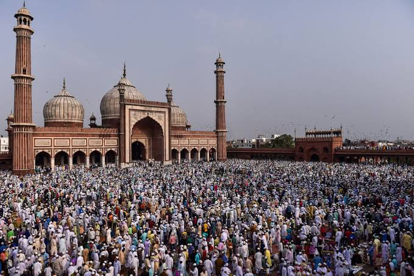

The Grand Launching of Celebrology - as a new academic field of study takes place in UNILAG on September 8, 2022. @J.F Ade Ajayi Auditorium
LATEST AWARD
CHIEF MRS MODUPE JOHNSON BAGS AWARD AS JEWEL OF INESTIMABLE.
- Admin
- September 22, 2022
The PDP candidate for the Lagos State House of Assembly, representing Surulere State Constituency II, Chief Mrs Modupe Johnson popularly known as godmother has bagged an award from Celebrology International as Jewel of Inestimable Value.

PRESS RELEASE
SENATOR IBIKUNLE AMOSUN TO BE HONOURED WITH WORLD CELEBRATIONS AMBASSADOR'S AWARD after SALLAH
- Admin
- July 9, 2022
First to receive the award in Nigeria and Africa. Released to the Nigerian Media on the 7th of July, 2022. by Enganimn Sola Odumosu Father of Celebrology and the World Leading Celebration Thinker.
What led to Celebrology?
Terrorist attack in America -The September 11, 2001 Disaster:
- Admin
- July 6, 2022
Enganimn.Sola Odumosu grew up in a Nigerian society where many problems have been plaguing the nation’s history. He had voiced out in the way he could as a young man yet he knew his limitation. He made serious contributions to both local and national dailies as well as magazines.More Info

BACKROLL AND SPILLOVER:
WORLD GOVERNMENTS DECLARE PUBLIC HOLIDAY TO MARK EID-AL-AHDA IN 2022
- Admin
- July 7, 2022
Backroll and Spillover are celebrological terms that sprang up as a result of the postulation of the celebration theory. But what are backroll and spillover?.More Info

Enganimn.Sola Odumosu
His Early Life and Education
- Admin
- July 6, 2022
Sola Odumosu lived with his parents in their rented house at Iyana-Ipaja in the latest years of the 20th century,1982 till 1990- these were periods of his growing years of childhood.More Info
Youth Action Project (YAP):
His Involvement In Youth Activities.
- Admin
- July 6, 2022
At the time Sola was in Ijebu-Ode Grammar School, precisely in SS 2 when he was elected the library Prefect, he joined the extra-curricular activities..More Info.

The Postulation of Celebration Theory:
- Admin
- July 6, 2022
Sola Odumosu propounded the celebration theory in his intellectual reaction to Abuja 2010 terrorist bomblast of October 1. It was the day Nigeria was celebrating its 50th independence Day during President Jonathan's regime.More Info.